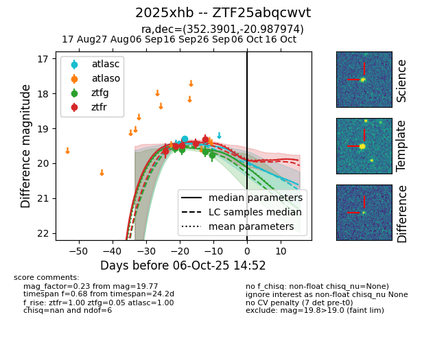

FINK: ZTF25abqcwvt
Lasair: ZTF25abqcwvt
ALeRCE: ZTF25abqcwvt
TNS: 2025xhb
YSE: 2025xhb
ZTF25abqcwvt (ztf,fink)
2025xhb (tns,yse)
equatorial (ra, dec) = (352.3901,-20.98797)
galactic (l, b) = (46.7128,-70.35549)

last atlasc=19.30, ztfg=19.61, ztfr=19.44
2 atlasc, 2 ztfg, 4 ztfr detections